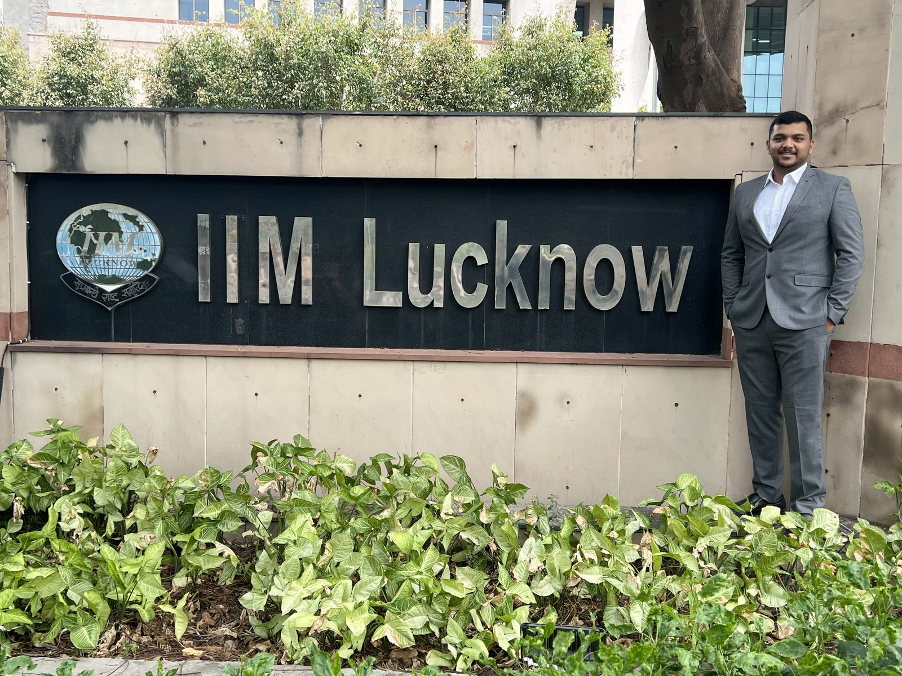

Hello!
I'm
Kshitiz.
I'm a banking professional with 5 years of experience across credit and risk management, digital transformation and AI-enabled business solutions. I'm now in the IPMX programme at IIM Lucknow. This site is a short tour of my skills, projects, writing and resume.
View my projectsBusiness, banking and technology at the intersection.
My experience spans branch leadership, credit, portfolio management, digital adoption, AI/ML use cases and cross-functional transformation. I focus on turning data and technology into measurable business outcomes.

Right now, IIM Lucknow.
I'm in the IPMX programme at the Indian Institute of Management Lucknow, 2026 to 2027. Before this I worked at State Bank of India, most recently as Deputy Manager and Branch Manager.
I was runner-up in the Consultoria case competition at IIM Lucknow, among 20 teams. I'm currently pursuing a GenAI-based online project with Accelerator X, and I'm a coordinator with the Rising Charitable Trust Society.
What I do
Technical
skills.
Capabilities built through execution, in banking roles and in building this site.
Credit and risk management
- Credit assessment and portfolio monitoring
- Early stress-signal detection
- Fraud and mule-account monitoring use cases
Digital transformation
- Enterprise digital-adoption initiatives
- Workflow and process redesign
- Cross-functional stakeholder management
AI-enabled business solutions
- GenAI knowledge-assistant implementation
- AI/ML fraud monitoring and lead identification
- Business-case development for senior leadership
Growth and relationship management
- Customer acquisition and retention
- Segment-specific targeting across retail, HNI and institutional customers
- Strategic partnerships and cross-selling
Web development
- Portfolio website development
- Responsive layouts that adapt across screen sizes
- Structured navigation and user-friendly page structure
Work
Projects.
Selected work from State Bank of India and IIM Lucknow, plus the website you're reading.
Personal portfolio website
Designed and developed a responsive personal portfolio website that presents my technical skills, projects, resume and professional information through a structured web interface. The focus is clean navigation and a layout that adapts across screen sizes.
Structure: Home, About Me, Skills, Projects, Resume, Contact.
AI/ML fraud monitoring and lead identification
Used AI/ML for fraud monitoring and lead identification while leading branch operations.
500+ suspicious mule accounts detected with 95% accuracy. 1,200+ qualified leads linked to ₹8 Cr+ incremental revenue.
Digital SME underwriting
Used digital SME underwriting, API-enabled data integration and workflow automation to sanction loans digitally.
250 digital sanctions delivered.
Digital transformation across 50+ branches
Led digital-transformation initiatives across more than 50 branches.
Branch dependency reduced by 30%. Digital migration accelerated by 50% and customer resolution time reduced by 35%.
GenAI knowledge assistant
Supported a GenAI-powered knowledge assistant and translated business requirements into AI-driven fraud-monitoring use cases.
Branch operations redesign
Redesigned branch operations through standardization and technology-enabled workflows.
Cost-to-income ratio reduced by 25%.
GenAI project with Accelerator X
Currently pursuing a GenAI-based online project with Accelerator X.
Consultoria case competition
Competed in the Consultoria case competition at IIM Lucknow.
Runner-up among 20 teams.
Blog
Cut-2-point.
"Through this blog I am trying to give a balanced view of issues surrounding us with the intention of striking a thought."
Visit the blogResume
Experience
and education.
From credit decisions to enterprise transformation: selected responsibilities and outcomes.
Experience.
Deputy Manager, Branch Manager
- Led branch operations on a ₹120 Cr portfolio, achieving 100% deposit growth and 109% housing-loan growth.
- Used AI/ML for fraud monitoring and lead identification, detecting 500+ suspicious mule accounts with 95% accuracy and generating 1,200+ qualified leads linked to ₹8 Cr+ incremental revenue.
- Maintained NPA levels below 1.5% through proactive risk management and portfolio monitoring.
- Redesigned branch operations through standardization and technology-enabled workflows, reducing cost-to-income ratio by 25%.
- Delivered a 90%+ operational-excellence audit score and supported customer-experience initiatives.
Assistant Manager, Credit Officer
- Managed a ₹130 Cr lending portfolio across retail, housing and priority sectors.
- Built strategic partnerships with builders and housing societies, contributing to 250% home-loan growth and 50% auto-loan growth within 12 months.
- Delivered 250 digital sanctions using digital SME underwriting, API-enabled data integration and workflow automation.
- Accelerated digital migration by 50% while reducing customer resolution time by 35%.
- Led digital-transformation initiatives across 50+ branches, reducing branch dependency by 30%.
- Supported a GenAI-powered knowledge assistant and translated business requirements into AI-driven fraud-monitoring use cases.
- Accelerated mutual-fund AUM growth by 50% through targeted cross-selling and digital-banking adoption.
Education.
IPMX
Indian Institute of Management Lucknow
B.Tech, Mechanical Engineering
BIT Sindri, CGPA 7.55/10
Class 12
D.P.S. Dhanbad, 94%
Certifications.
Certified Scrum Product Owner (CSPO)
Scrum Alliance
Junior Associate of Indian Institute of Bankers (JAIIB)
Contact
Let's
connect.
Connect with me on LinkedIn to discuss business transformation, AI-enabled financial services, credit and risk, or opportunities to collaborate.
Connect on LinkedIn